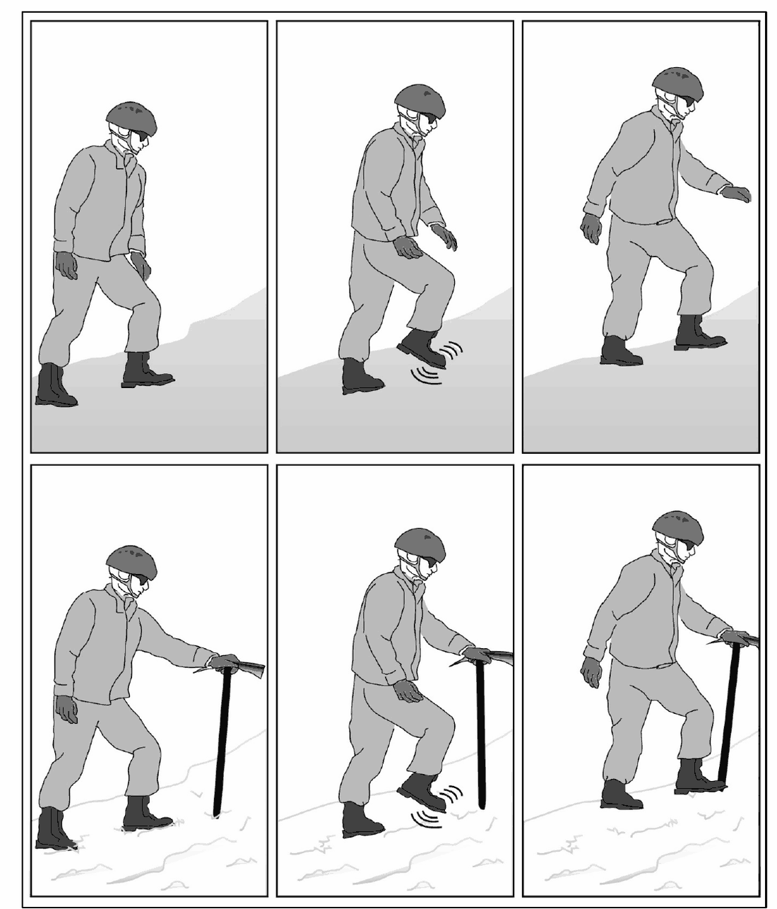
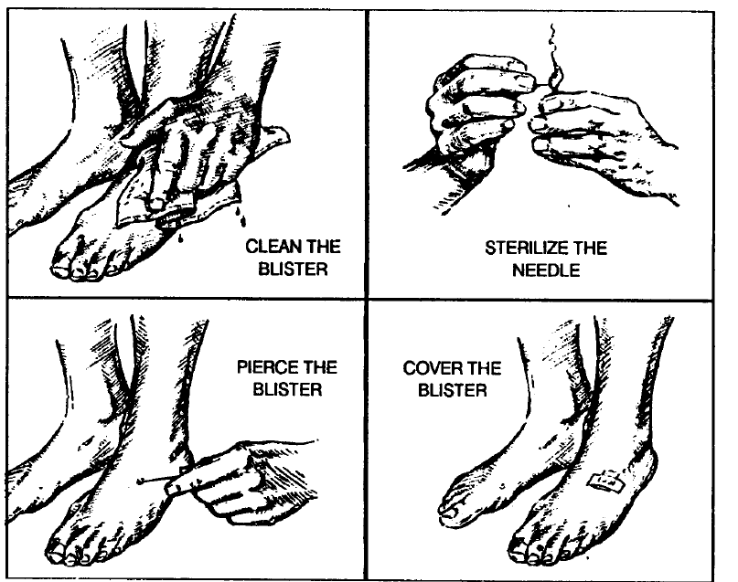
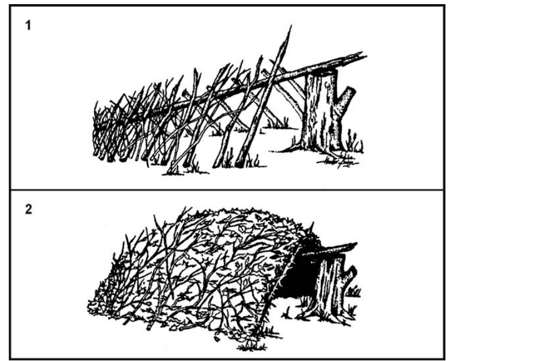
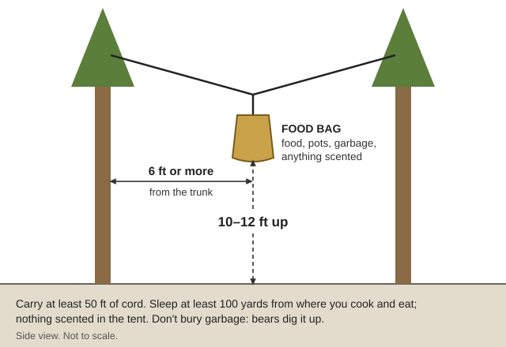
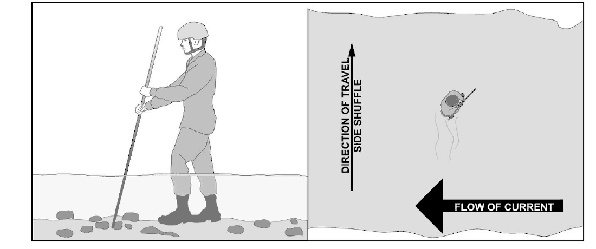
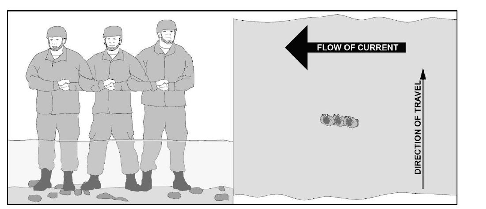

🎒 On Foot: Backpacking and Travel When the Roads Are Empty
With no fuel and no car, walking is how a household reaches Grants Pass, the coast, family or a trade. This guide covers planning, loads and packs, feet, water and food on the move, camp, wildlife, cold rivers, snowy passes and staying safe on the road. Miles, travel days and route files are in other guides, and this one links to them. Its new books are in Southern-Oregon\Travel-On-Foot: the Army's Military Mountaineering (TC 3-97.61, 2025) and Foot Marches (ATP 3-21.18, 2017), Horace Kephart's Camping and Woodcraft (1916, two volumes), ODF's fire-season rules, OSU's poison-oak bulletin and a National Park Service trip planner. The older Foot Marches (FM 21-18) and Knapik's Load Carriage are in Southern-Oregon\Bicycles-Carts\Trailers-Carts; the Air Force survival handbook (AFH 10-644, the whole book despite "Signaling" in its file name) is in Southern-Oregon\Comms-Signals\Visual-Sound-Signals.
The short version
Cold rivers kill. Wade alone only where it is knee-deep or less and the current mild (TC 3-97.61, p. 345). Unbuckle hip and chest straps first (p. 344), never tie yourself to a rope, and "if in doubt, turn back or wait for help" (NPS North Cascades, p. 1). Oregon rivers stay "dangerously cold" in warm weather (OSMB, p. 17).
Carry less: plan family loads on 10–20 kg (22–44 lb) (World Bank, p. 65).
Plan by time, not miles: about 15 miles a day on roads (what the walking-routes tool assumes), plus an hour per 1,000 ft of climb (FM 3-97.6, p. 72). Late December has only about 9 hours of daylight (arithmetic).
No fires in fire season. ODF's 2026 rules ban "campfires, cooking fires and warming fires" from May 15 (ODF closure, p. 1). Eat cold, or use a stove in a cleared spot.
Leave a written plan; turn back early. Leaving "a safe shelter to travel in adverse weather conditions is foolhardy" (AFH, p. 427). And "Travelling alone is dangerous" (p. 426).
🗺️ Planning a trip
Distance, hills and daylight
Miles and days from Cave Junction are in "Travel times from Cave Junction" in the Bicycles & Carts guide and "Walking out" in the Start Here guide; print directions and maps from Walking-Routes\WALKING-ROUTES.html. All assume 15 miles a day with a pack.
Hills: the Bicycles guide has the Army rule (a third more distance, an hour per 1,000 ft up). Checks: 800 ft of climb an hour "is good work", and "If you cannot talk without catching your breath ... you are going too fast" (Kephart Vol. 2, p. 146); distances are "reduced by half over average gradients of 10 percent" (FM 21-18, p. 66).
The first days are hardest: stiff legs on day two; poor sleep, constipation and sore feet by day three (Kephart Vol. 2, pp. 142–143). Make the first days 8–10 miles (rule of thumb).
Daylight at Cave Junction(arithmetic, 42° N): about 9 hours on December 21, 10 in mid-November and late January, 12 at the equinoxes, 15¼ on June 21. A 15-mile day takes 7½–8 hours with rests, so plan 10–12 miles in midwinter. Start looking for camp "at least two hours before sunset" (Kephart Vol. 1, p. 212).
Season: snow can fall in any month above 5,000 ft, and flash floods run "many miles downstream" of the rain (FM 3-97.6, p. 15). Late spring and early fall are usually easiest (rule of thumb); check "Reading fire danger with no forecast" in the Wildfire guide.
Choosing a route
Where there are no bridges, "keep away from streams and follow the ridges between them" (Kephart Vol. 2, pp. 49–50), and "Travel on trails rather than taking shortcuts through the brush" (AFH, p. 446). The library's back-road routes climb high Forest Service roads, such as Grayback Road (FR 4611) toward Grants Pass and Medford and Sanger Peak Road (FR 4803) toward Crescent City; US-199 stays lower. The route files give no heights, so read each climb off a topo map (rule of thumb) ("Reading a topo map" in the Navigation guide). No book on the drive gives camping limits on public land; the Forest Service has long allowed about 14 days in one spot (rule of thumb).
The plan you leave behind, and when to turn back
Leave a note "stating departure time, destination, route of travel, personal condition, and available supplies", and carry "sufficient water to reach the next probable water source" (AFH, p. 427). The NPS trip-plan form is in "Getting un-lost" in the Navigation guide. Turn-around rules to write on the plan (rule of thumb):
A turn-around time: if you aren't at the pass, ford or planned camp by then, go back.
A river above the knee, or rising: "Not every river or stream can be crossed safely" (TC 3-97.61, p. 351).
Snow above the knee on a pass and no snowshoes; smoke or a fire column ahead; a hot east wind in fire season.
Water down to half with no sure source ahead; someone hurt, sick or limping; a checkpoint that says no.
Caches
"Bears will demolish any such pile [of stones] that one man could build." Hang the bundle from a peeled pole between two trees 15–20 ft up, trees "too slender for a bear to climb, yet too stout for him to shake" (Kephart Vol. 2, p. 233). Hide damp-proof things under an old, half-buried log, away from camp so one raid or fire doesn't take both (p. 236). Dried food needs a "completely waterproof" container (AFH, p. 369).
⚖️ How much to carry
Who and where
Load
Source
Everyday carrying
10–20 kg (22–44 lb); 50 kg only "for short distances"
This guide follows the World Bank and Kephart figures, which fit ordinary people; the Army numbers are ceilings for fit young soldiers. Each 10 lb over 40 lb cuts about 2 km off six hours' march (FM 21-18, p. 66). "Find out what is light and easy for you, and then GO LIGHT" (Kephart Vol. 2, p. 102). Water weighs 2.2 lb a liter(arithmetic). To get fit, add load or distance, "but not at the same time" (FM 21-18, p. 80).
Children, elders and the injured:
The slowest walker sets the pace (AFH, p. 428). For children, "avoid long distances" and keep "a good easy pace, say two or three miles an hour" (Boy Scouts 1911, p. 173).
No book on the drive gives loads for children or older people. Start a child at about a tenth of body weight and a frail adult at 10–15 lb, and adjust by day two (rule of thumb). Past frostbite or trench foot makes it likelier again (FM 21-18, p. 106).
Carrying someone: two poles through a blanket, jackets or sacks; with no poles, roll a blanket in from both sides and grip the rolls (FM 4-25.11, pp. 211–212). Use four carriers who swap often (rule of thumb). To fetch help, "Send two people if possible" (AFH, p. 426).
Animals, carts, sleds: "Travel and packing" in the Horse guide; donkeys of 100–110 kg "regularly carry loads of 25-50 kg over distances of up to 20 km" (Starkey, p. 82). Handcarts and travois are in the Bicycles guide. "Sleds should be used when heavy loads must be carried over snow-covered terrain" (TC 3-97.61, p. 156).
🚶 Pace, rests and walking technique
The day's rhythm. On roads this guide follows FM 21-18; on steep trails and in cold, the newer books' shorter stops.
Start in fewer layers, a little chilly (AFH, p. 428); stop to fix laces, straps and layers in the first half hour (ATP 3-21.18, p. 25).
On roads: rest 15 minutes after the first 45, then 10 in every hour, feet up (FM 21-18, p. 48).
On steep trails and in cold: "shorter breaks taken more often are better ... especially in colder weather" (TC 3-97.61, p. 109); "Long halts eat up daylight; they stiffen the muscles; and they cause chills" (Kephart Vol. 2, p. 142). Lean the pack on a tree or bank.
At any long stop, put on a layer: "It is much easier to keep a warm body warm" (ATP, p. 25).
Halfway: a 15-minute stop in which everyone changes socks (FM 21-18, p. 91).
Uphill: slow and steady, zigzagging rather than charging straight up (TC 3-97.61, p. 107). The rest step: pause on the straight rear leg, "so the bone, not muscle, supports the weight" (ATP, p. 25; TC 3-97.61, p. 108).
Downhill: bend the knees; "Even one pole can be very helpful". Go straight down scree in short shuffling steps, heels dug in; never walk below someone on a loose slope (TC 3-97.61, p. 109).
Heat: don't march "at the hottest time of day" (FM 21-18, p. 61); 3½ mph with 40 lb or more is "hard work" (FM 21-10, p. 57). Heat illness: "Heat and cold in the Valley" in the Field Care guide. Drop no wrappers; they tell others who passed (FM 21-18, p. 84).

The rest step: after each step, pause on the straight rear leg so bone, not muscle, holds the weight; lower row, the same with a stick or ice axe (TC 3-97.61, p. 108).
🎒 Packs: fitting, loading, making and mending
Fitting and loading a pack
The hips carry the load: "A waistband will support 80 to 90 percent of the weight" cinched "around the pelvic girdle" (AFH, p. 454); in one test a frame and wide hip belt cut shoulder pressure from 203 to 15 mm Hg (Knapik, p. 31).
Heavy things close to your back, balanced side to side; high on easy ground, lower on rough ground ("low or midway"); rain gear and first aid on top (AFH, p. 453; TC 3-97.61, p. 156).
Nothing dangling: "flip-flops" and "stick-outs" snag in brush and can throw you off a log bridge; the best pack is one roomy sack holding everything (Kephart Vol. 2, p. 126).
Adjust at every rest (AFH, p. 450). Numb, tingling arms ("rucksack palsy"): move the straps or use a frame and hip belt (Knapik, p. 47). Lift a heavy packboard by sitting against it and rolling to your knees; never drop it (Packboard, p. 1).
Packs you can make
Pack
How
Good and bad
Source
Blanket roll
Tarp under, blanket on top, gear in two even piles at the ends; roll, tie, join the ends; over one shoulder
"no help from the hips"; "suitable only for a day's hike and a one-night camp"
Fit: a thumb's width past the big toe, and a finger under the unlaced tongue (FM 21-18, pp. 107–108). Pressure means too small, rubbing too big. Carry spare laces (p. 109).
Break boots in before the trip, alternating with an old pair and taping known hot spots (ATP 3-21.18, p. 110). Dry them slowly with a warm cloth inside; on freezing nights keep them in the sleeping bag (FM 21-18, p. 107). Resoling: "Boots, shoes and moccasins" in the Clothing guide.
Socks: "The wool cushion-sole sock is best"; dry damp ones inside your shirt (FM 21-18, p. 109). A thin nylon or polyester liner under the wool cuts blisters (Knapik, p. 48).
Wet feet: stop "and wring out the hose; do not 'walk them dry'" (Kephart Vol. 2, p. 144). No dry socks left: grass insoles an inch thick, made fresh daily (AFH, p. 191).
Blisters
Prevention: two socks, good insoles, a lighter load, distance built up slowly, and "Cover skin when hot spots appear" (Knapik, p. 47). A hot spot is "a localized warm or burning sensation"; cover it with moleskin or tape at once (p. 49).
Draining: the books disagree. TC 3-97.61 says "Never drain blisters unless" infected (p. 49); FM 21-18 drains all of them (p. 102); Knapik leaves small ones and drains big ones on weight-bearing spots (p. 50). This guide follows Knapik:
Small (under 5 mm, about 3/16 in) and not painful: leave it whole, inside a doughnut of moleskin (Knapik, p. 52).
Big and tight on the sole or heel: wash around it, flame a needle, prick it at the edge, press the fluid out and leave the skin on; cover past the edges (FM 21-18, p. 102).
Torn open: take off the loose roof and treat it as a wound (Knapik, p. 51); see "Wounds and infection when there's no hospital" in Field Care.
Spreading redness or pus: infection, which can become cellulitis or blood poisoning (Knapik, p. 48). Rest the foot.

For a big, tight blister on the sole or heel (step 2): clean it, flame the needle, prick it at the edge, and cover it with the skin left on (FM 21-18, p. 102).
Trench foot and frostbite
Trench foot comes from days in wet, cold boots at 32–50 °F, sitting or standing still, laced tight (FM 21-18, p. 106): an ordinary valley winter. Early on, feet are pale, numb and not painful, so check each other. Prevent it with dry socks and boots daily; in wet boots, wiggle the toes. Treat gently: feet "should not be rubbed or massaged"; clean, dry, raise, and carry the person (same page). Mild cases heal with about 24 hours of drying (TC 3-97.61, p. 54).
Frostbite (high passes in winter): warm small spots with body heat, hands in armpits, bare feet on a companion's chest; no massage, fire or snow (FM 21-18, p. 105). Don't thaw deep frostbite on the trail: "it is safer to walk on frozen feet" (p. 106).
A daily foot routine
When
What
Source
Before the trip
Toenails "short and square, and straight across"; boots broken in
Rub healthy feet only. A stress fracture needs two or three weeks of rest (FM 21-18, p. 107).
🧥 Clothing, cold and heat
What to wear is in "Dressing for our cold-wet winters" in the Clothing guide. On the trail:
Three layers: one next to the skin that moves sweat, an insulating one, and a wind-and-rain shell. Wool "provides warmth when wet"; soaked clothing loses heat "several hundred times faster" than dry; cotton is a poor choice (NY hunter manual, p. 77).
Start cool; "Do not sit around when overheated and damp ... But do not muffle up on the march" (Kephart Vol. 2, p. 145). Dry underwear and socks at night "are as warm as an extra blanket" (p. 104). Carry spare socks, hat and gloves, and a poncho or "extra-large plastic trash bag" (TC 3-97.61, p. 73).
Hypothermia creeps up from wet brush, wind and "Resting against cold surfaces"; chocolate, peanuts or raisins help (NY hunter manual, p. 82). Heat: a hat and light clothing that covers the skin (p. 77). Treatment of both: Field Care. Smoke: the Wildfire guide.
Settled: plan about 4 quarts for a cool walking day and 6–8 for a hot one, never more than about a quart an hour (rule of thumb, from the ranges above).
Drink at every halt, "even when not thirsty", and refill "at every opportunity" (FM 21-18, p. 17). Urine should be pale yellow. In heat, "Do not restrict salt": about 1 gram of sodium an hour on long, sweaty days (ATP, p. 107); too much plain water dilutes the blood's salt (Field Care).
Don't eat snow: it "will contribute to loss of body heat" (TC 3-97.61, p. 46). Running short? "physical activity must be reduced" (p. 75); walk in the cool hours (rule of thumb).
Finding, carrying and treating water
Finding: streams, springs, rain; a short tube fills a bottle from a trickle off rock; "Water is scarce above the timberline" (TC 3-97.61, p. 75). By a muddy pond, dig a hole "about 18 inches across and down about 6 inches below water-level, a few paces from the pond", bail it three times, then take the clearer water (Seton, p. 292). Still treat it. Summer ridges are dry: plan refills at creeks and springs on the topo map (rule of thumb).
Skip water below farms or mine tailings (TC 3-97.61, p. 75). "Never drink from the well of an abandoned farm" (Kephart Vol. 1, p. 214); "It is not true that running water purifies itself" (p. 213).
Carrying: wide-mouth bottles; bladders "can break and have freezing issues" (TC 3-97.61, p. 73). Sleep with your water on freezing nights (p. 75).
Treating: "Virtually all surface waters are microbiologically contaminated", and Giardia and Cryptosporidium "thrive in domestic and wild animals" (TC 3-97.61, p. 75). A 1-minute boil kills them; tablets miss Crypto and work slower in cold water; many filters don't stop viruses (p. 76). Methods: "Step 3 — Kill the germs" and "After a wildfire" in the Water Purification guide.
🍞 Food on the move
How much: a loaded march burns over 300 calories an hour (FM 21-18, p. 65); Kephart lists 3,400 a day for moderate work, 4,150 hard, 5,500 very hard (Kephart Vol. 1, p. 185), against everyday adult needs of 1,600–3,000 (Dietary Guidelines, p. 152). Plan 3,000–4,000 calories, about 2 lb of dry food, per person per walking day(arithmetic).
Carry one extra day's food (TC 3-97.61, p. 74). Eat little and often: 25–75 g of carbohydrate an hour in four bits (ATP, p. 106).
Parched corn (pinole), the lightest trail food in the library:
Parch dry corn "in clean hot ashes until it bursts", sift it, and pound it to meal (Parker, p. 118).
Stir it into water, "one tablespoonful to a pint" (same page). Two heaping tablespoons with raisins or chocolate made Kephart "a square meal" (Kephart Vol. 2, p. 158).
Go easy: it swells. A handful (2 or 3 oz) was "even considered dangerous unless cooked" (Parker, p. 119).
Make at home before you leave: jerky and pemmican ("Jerky and pemmican" in Preserving Food), hardtack ("Staples" in Food From Scratch) and dried fruit. A fist-size piece of pemmican "would make a meal for two men" (Kephart Vol. 2, p. 160). Eat lean jerky with fat and grain, not alone (rule of thumb).
Little fuel: in fire season, plan no-fire meals or a legal stove (rule of thumb). A broad, shallow pot "boils water much sooner"; skip foods that need long boiling (Kephart Vol. 2, pp. 106–107). Use a lid: only 10–40% of a fire's heat reaches the pot (Aprovecho, p. 7). In the wet season, burn "dry, dead hardwood no larger than a pencil" for "less smoke" (AFH, p. 563).
⛺ Camp and sleep
Choosing a campsite
A good site has water; wood if fires are allowed; a level spot "well above any chance overflow" ("Observe the previous flood marks"); "Security against the spread of fire"; morning sun; shelter from winter wind; and privacy (Kephart Vol. 1, p. 213). Move on if the site is:
in a creek bottom, dry streambed or drainage (flash floods), under dead trees or dead limbs, in poison oak, or in a slide path, which shows as a strip of young growth down the slope (AFH, p. 195);
on the valley floor, where cold air pools (AFH, p. 194); camp "up the hillside above the valley floor", clear of rockfall (TC 3-97.61, p. 77);
Tarp or poncho lean-to: back to the wind, a stick or line under the middle so rain can't pool (FM 3-05.70, pp. 69–70). Kephart tied one long side of a 7 × 9-ft cloth to a pole 4 ft up and staked the other out at 45° (Kephart Vol. 2, pp. 104–105). More in "Emergency tarp and plastic shelters" in the Shelter guide.
Rest one end of a long ridgepole on a stump, rock or two short stakes, about waist high.
Lean sticks along both sides as ribs, wide enough for your body and steep enough to shed rain; lay brush across.
Pile dry leaves, needles and grass at least 3 ft thick, "the thicker the better", with branches on top.
Put a 1-ft layer inside to lie on, and pull a heap of debris into the doorway behind you.
Off the cold ground: "Don't bed down on the cold, hard earth" (Kephart Vol. 2, p. 105). Fir boughs are best, spruce prickly, pine thin (AFH, p. 222). Kephart's 1-lb "bed tick" is a cloth bag stuffed with dry leaves: "A 3-pound blanket on top of such a mattress is warmer than a 5-pound one without it" (p. 106). On snow, use a foam pad (TC 3-97.61, p. 73).

Debris hut: (1) the ridgepole on a stump with ribs along both sides; (2) piled at least 3 ft thick with leaves and brush (FM 3-05.70, p. 83).
Fire and fire season
The law in 2026 (ODF closure, pp. 1–2), on forest land protected by ODF's Southwest Oregon District:
"Open fires are prohibited, including campfires, cooking fires and warming fires", except on private land with the owner's permission at low (GREEN) danger and at designated campgrounds. "Smoking is prohibited while traveling."
Camp stoves on bottled fuel are allowed in areas cleared "for 50 feet in all directions". While traveling, except on state highways, county roads and driveways, carry "one shovel and one gallon of water or one 2½ pound or larger fire extinguisher" (p. 2): on foot, a small shovel and a gallon among your bottles (rule of thumb).
The 2026 closure began May 15; ODF reissues it yearly. Treat June through October as no-fire months whether or not anyone says so (rule of thumb). Illegal outdoor burning can cost $12,000 a day (DEQ, p. 1).
Where a fire is allowed (wet season or a legal fire ring): keep it small and off slopes; drown it, stir, and feel the ashes until "all steaming and sizzling stops"; "Never just bury a fire" (ODFW hunter manual, p. 34). Never burn poison oak: the smoke can put people in "intensive care" (OSU PNW 108, p. 4).
A quiet, hidden camp
Kephart's "masked camp" is "invisible from trails, and from opposite ridges", screened by evergreens so smoke and firelight don't show, near a trail but not on it, with dead wood about so there's no noise of chopping, and with the way in and out hidden (Kephart Vol. 2, pp. 237–238). Also BLISS: "Blend in", "Low silhouette", "Irregular shape", "Small", "Secluded location" (FM 3-05.70, p. 68). Toilet: a "cat hole" 6–8 inches deep, at least 200 ft from camp and water (NPS North Cascades, p. 1); more in the Sanitation guide.
🐻 Bears, cougars, poison oak, ticks and snakes
Food storage in bear country
Hang it: ODFW says "at least 10 feet high and 6 to 10 feet from a tree trunk" (ODFW bears, p. 2); BLM on the Rogue says twelve feet "between two trees and six feet from tree trunks" (BLM, p. 16). Use 10–12 ft up and 6 ft out, on a line between two trees, with food, pots, garbage and anything scented. Carry at least 50 ft of cord (NPS North Cascades, p. 1).
"Sleep at least 100 yards from cooking and eating areas"; no food, soap or lotion in the tent; "Do not bury garbage—bears will dig it up"; "Avoid berry patches"; "Don't hike after dark" (ODFW bears, p. 2).

Hang food, pots, garbage and anything scented 10–12 ft up and at least 6 ft from the trunks, on a line between two trees (a diagram drawn for this guide).
Meeting a bear or a cougar
Black bear
Cougar
Usually
It avoids you. Give it a way out, step off the trail and walk away; leave cubs alone
It leaves if it can. Most active at dawn and dusk
If it stays
Don't run. Avoid eye contact. Back away slowly, facing it
Don't run. Keep eye contact. Stand your ground, then back away slowly
Make noise
Raise your voice, yell, clap
Yell, clap, raise your arms; pick up children without bending down or turning away
A bear standing up is usually catching a scent, not attacking (ODFW bears, p. 1). In cougar country be "alert when sitting quietly or stopping to rest", and keep away from animal kills (ODFW cougar, p. 2).
Poison oak, ticks and rattlesnakes
📷 Is that poison oak? Photograph it with the plant identifier (🧮 Tools tab). Leaves of three, let them be, whatever it says.
Poison oak is common in western Oregon in brush, woods, clearcuts, stream banks and canyons, as a shrub or vine, usually with three leaflets, red in fall (OSU PNW 108, pp. 1–2; photos, p. 3). The oil is in every part but the pollen, all year, bare winter stems too. It rides on clothes, packs, firewood and dogs: "Wash your skin with soap and water as soon as possible", wash clothes separately, wash the dog (p. 4). No water: wipe with dirt or sand, but not over blisters (FM 21-76, p. 132).
Ticks: check your whole body often (AFH, p. 70); pull a tick straight out with fine-tipped tweezers close to the skin, with no nail polish, petroleum jelly or heat (CDC, p. 50). More in "Disease and safety" in the Hunting guide.
Rattlesnakes: no hands into crevices, heavy brush or hollow logs; "Don't step over a fallen tree. Step on the log and look" (FM 3-05.70, p. 531). Bites: "Rattlesnakes, spiders and stings" in Field Care (no cutting, sucking, ice or tourniquet).
🌊 River and creek crossings
"The force of flowing water may be extremely great and is most often underestimated." Treat every stream as a danger and avoid it if you can (TC 3-97.61, p. 343).
When not to cross
Knee-deep is the limit for one person, in "mild to moderate" current only. Swift water runs over 5 ft a second, about walking speed (arithmetic) (TC 3-97.61, p. 345). "Six inches of fast-moving water can knock you off" your feet (Spotter guide, p. 12).
Our rivers are cold all year. A fall in brings "involuntary gasping", and cold water "drains body heat 25 times faster than cold air" (OSMB, p. 17). In very cold water, "Wade across if you can get only your feet wet"; otherwise find another way (FM 3-05.70, p. 296).
Never cross above rapids, falls or a logjam. Logjams and fallen trees ("strainers", "sweepers") let water through but trap people (OSMB, p. 14; AFH, p. 496).
Wait for the water to drop. Snow-fed streams run lowest in early morning (TC 3-97.61, p. 343). After heavy winter rain, wait a day or more; a bridge is worth a long detour (rule of thumb). "Not every river or stream can be crossed safely. If it is possible, cross at a different time or place, use a different technique, or choose another route" (p. 351).
Picking the spot and getting ready
Look from high ground first. Cross where the river widens, usually shallower; avoid bends (the outside is deep and fast) and narrows; choose low banks (TC 3-97.61, pp. 343–344). Below the crossing you want a shallow bar to wash up on, not rapids (FM 3-05.70, p. 295). Riffles in a line mean rocks; a hump and drop behind a rock is a "hole" that sucks at your feet (TC 3-97.61, p. 351). Then (TC 3-97.61, p. 344 unless noted):
Sleeping bag, dry clothes and food in waterproof bags (trash bags work), dry clothes on top.
Socks and insoles off and stowed; boots back on for grip.
Pack high and snug, then unbuckle the waist and chest straps so you can get out of it if swept off your feet. "Unbuckle your pack straps ... Never tie yourself in while you cross" (NPS North Cascades, p. 1).
The Army normally keeps clothes on, with dry ones packed. In our cold water, keep them on and change on the far bank (rule of thumb).
Face slightly across the current; in strong current, turn more side-on and lean upstream.
Plant the pole upstream of you as a third leg, and probe with it.
Aim slightly downstream; going straight across fights the current.
Lead with the downstream foot in small steps; never move one foot until the other is set, and never cross your legs.
Step on the upstream side of rocks; the downstream side is scoured and the rock may roll.
On the far bank, drain your boots and put on dry socks (p. 344).

Crossing alone: the pole is planted upstream as a third leg; from above (right), the walker side-shuffles across with the current coming from the side (TC 3-97.61, p. 345).
Chain: side by side facing the far bank, arms linked, the biggest person upstream leaning into the current. Conga line: all face upstream, each holding the clothes or pack behind the shoulders of the person upstream. Wedge: the biggest at the upstream point, small people and the injured in the middle (pp. 346–347). One person calls each step. If someone loses control, don't cling so hard that the whole line goes down (p. 346).
Rope handline: stretched across at 30–45° downstream; cross on its downstream side, one at a time (p. 348; pp. 349–350). Taking the rope over first is the most dangerous job: the strongest swimmer, belayed, in a life jacket if you have one (pp. 347–348). Never tie directly into a rope in moving water; you must be able to let go (p. 348).
If you're swept away: shed the pack; face downstream, feet up in front to fend off rocks, and "work with the flow of water" toward the nearest bar; keep away from eddies. Get out and get warm fast: "Hypothermia will set in quickly in colder waters" (pp. 350–351).

The chain: side by side, arms locked, facing the far bank, the biggest person on the upstream end (TC 3-97.61, p. 346).
❄️ Snow and the passes
Stay off the passes in storms and deep snow: snow can fall any month above 5,000 ft (FM 3-97.6, p. 15), and the back-road routes climb into country that holds snow into spring ("high passes can get snow", Start Here). In winter take the lower highway route or wait for a clear spell (rule of thumb).
Walking on snow: best is snow that holds you, next best calf-deep; avoid thigh-deep. Go early after a cold night, while the crust holds (AFH, p. 467).
Snowshoes: bend a sapling about 1 in thick and 5 ft long into a loop about 12 in wide and lace it with cord; in a pinch, lash pine boughs together at the cut ends and tie them on (AFH, pp. 255–256; TC 21-3, p. 52). Take them off when the snow holds you (AFH, p. 468).
Sunglasses against snow blindness (TC 3-97.61, p. 73). In fog or with snow over the trail, use the compass and pace count in the Navigation guide.
Avalanche signs. Our danger is mostly on steep, open slopes and gullies high up after big storms (rule of thumb).
Most slides start on slopes of 30–45°; slab avalanches cause about 90% of deaths (AFH, p. 431). Watch winds of 15 mph or more, and the time during and just after storms (p. 433).
Slide paths: "Steep, open gullies and slopes, pushed over small trees, trees with limbs broken off, and tumbled rocks" (AFH, p. 434); "broken tree stumps at different heights" (TC 21-3, p. 46).
Danger now: "If the snow echoes or sounds hollow, conditions are dangerous. If the snow cracks and the cracks persist or run, the danger of a slab avalanche is imminent" (AFH, p. 434).
Crossing: one at a time, never tied together, each trailing a line about 100 ft long. If caught: drop the pack, "use swimming motions" toward the side, get an arm up, make a breathing space. Buried people have about a 50% chance after 30 minutes, so dig fast (p. 435).
🛡️ Safety on the road
This is about avoiding trouble, calming it, and turning back. Fighting and patrolling are outside these guides.
Low profile: a pack with "nothing exposed to advertise your mission" (Kephart Vol. 2, p. 108); earth tones that "blend into your surroundings" (NPS North Cascades, p. 1). Don't show food, tools or weapons; spread valuables among the packs (rule of thumb).
Most people are like you: in American disasters looting has been "very rare", though massive in some catastrophes abroad (Quarantelli, p. 12).
Meeting strangers (AFH, pp. 168–169): if you can, "wait until only one person is near and, if possible, let that person make the initial approach". "Displaying fear, displaying weapons, and making sudden or threatening movements" can "prompt a hostile response". Smile; "Approach them slowly and don't rush matters." Keep any promise; don't enter a house uninvited. What to say: "Don't be a target" in Home & Property Protection.
Checkpoints and roadblocks
No book on the drive covers these from the traveler's side; these steps are (rule of thumb):
Stop well short, in daylight and plain view. Never approach at night or try to slip around.
One person walks forward slowly, hands empty and visible; the rest wait.
Say who you are, where you're going and why, and ask to pass. Offer road news.
Keep your voice low and give them space ("Someone at the gate, strangers, or a break-in" in Home & Property Protection; De-escalation, p. 15).
Don't argue or force it. If refused, thank them and turn back or go another way. Pass towns by day; camp well away.
Share freely(rule of thumb): bridges out, safe fords, fire and smoke, water, sickness on the road, weather. Keep to yourself: how many live at home, what you carry, where your cache is, when you'll be back, and whether you are armed. Oregon law on force is in Home & Property Protection.
Tarp or shelter cloth about 7 × 9 ft, cord, stakes
Water, 2–4 qt, and a way to treat it
Blanket or sleeping bag; foam pad or a bed tick to stuff with leaves
Food, plus one extra day's
About 2 lb of dry food per person per day
Rain layer, warm layer, hat, gloves
Small pot with lid, cup, spoon; stove and fuel in fire season
Spare dry socks
Change of underwear and socks
Knife; flashlight or headlamp, spare batteries
50 ft of cord and a bag for hanging food
First-aid and foot kit (below)
Repair kit ("Mending" under Packs)
Poncho or big garbage bag
Trowel, soap, toilet paper
Spare glasses; two days' extra medicine
Camp shoes
Fire starter in a waterproof case (wet season)
Notebook and pencil for trail notes
Fire season: small shovel and a gallon of water (ODF)
Copies of route directions and map
First-aid and foot kit: "The kit to build now" in Field Care, plus foot powder, gauze and adhesive tape (FM 21-18, p. 55), moleskin, a needle, and splint material (TC 3-97.61, p. 73). Leave the trip plan at home, and leave out the signal flares and lighter fluid some old lists include. For a wildfire evacuation, see "Go-kit" in the Start Here guide.
📡 Staying in touch and trail signs
Radios: section 5, "FRS / GMRS / MURS", of the Radio guide. No radio: the Signals guide covers whistles, mirrors and "Runners, relays and written messages"; no signal fires June–October. Agree on whistle signals before you leave (stop, come here, help), as the Army settles its sound signals in advance (FM 21-18, p. 47).
Signs for people behind you: one stone set on another, a twig broken and left hanging, or a tuft of grass tied in a knot all mean "this is the trail" (Seton, p. 267; chart, p. 268). "All trails should be marked" (AFH, p. 429).
Notes at forks and camps: a dated note in a jar under a small cairn: names, date, which way, all well or not (rule of thumb). Write nothing you wouldn't want a stranger to read.
🆘 Getting lost
Follow "Getting un-lost" in the Navigation guide: Stop, Think, Observe, Plan. Before leaving each place, "study their backtrail carefully" (AFH, p. 429). "If you get lost, the best thing you can do is stay put and wait", using a whistle, bright clothing or a mirror (NPS North Cascades, p. 1), but that works only if someone has your trip plan and will come. If no one will, walk a bearing to a big handrail such as US-199 or the Illinois River ("Terrain association" in the Navigation guide).